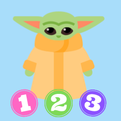

Overview
Purpose
To provide specialized babysitting services that meets the needs of every parent and child
Audience
Parents, caregivers, babysitters
Branding
Website Logo
Style Guide
Color Palette
Palette URL: https://coolors.co/03a0f5-e8ffe0-fef9ff-d8fcc9-a8ddfa
| Primary | Secondary | Accent 1 | Accent 2 | Accent 3 |
|---|---|---|---|---|
| #03a0f5 | #E8FFE0 | #FEF9FF | #d8fcc9 | #A8DDFA |
Typography
Title Font: Fredoka One
Bold Font for Title
https://fonts.googleapis.com/css2?family=Fredoka+One&display=swap
Heading Font: Merriweather Sans
Elegant Font for Headings
https://fonts.googleapis.com/css2?family=Poppins:wght@200&display=swap
Paragraph Font: Poppins
Simple Font for Paragraphs
https://fonts.googleapis.com/css2?family=Merriweather+Sans:wght@300&display=swap
Normal paragraph example
Baby Yoda 123 is a bank of people like you that is looking to find the right babysitter for what you love the most, your children. This page is design with the purpose to help you find a person with specific carcteristics that will give you relief. Also, if you are looking to have a part-time job helping others, this is your place.
Colored paragraph example
Baby Yoda 123 is a bank of people like you that is looking to find the right babysitter for what you love the most, your children. This page is design with the purpose to help you find a person with specific carcteristics that will give you relief. Also, if you are looking to have a part-time job helping others, this is your place.
Navigation
Wireframes
Home
Find a Babysitter